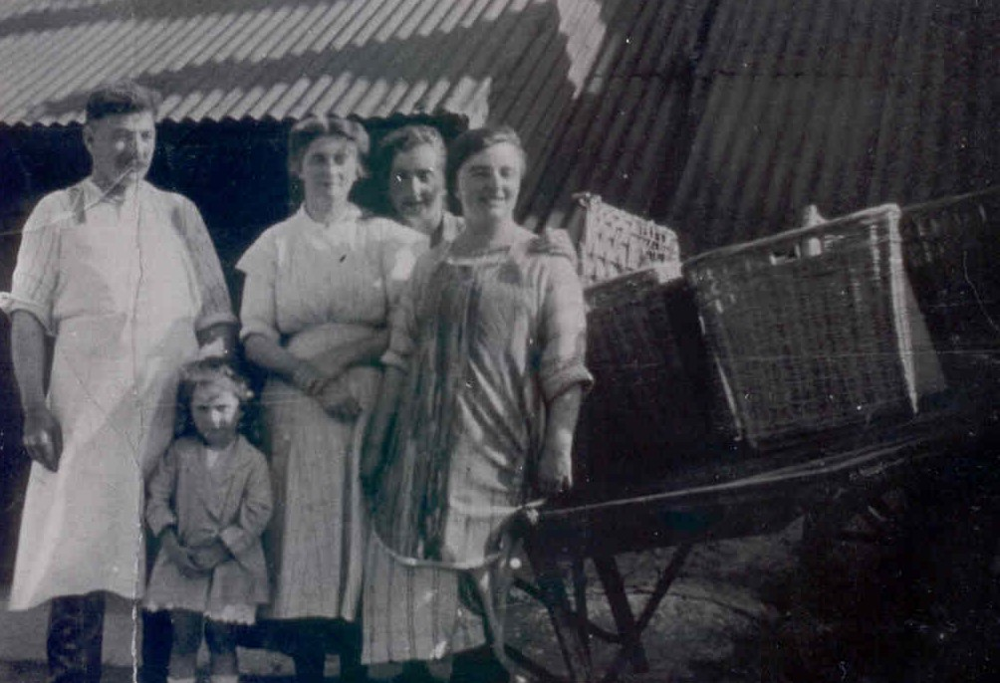
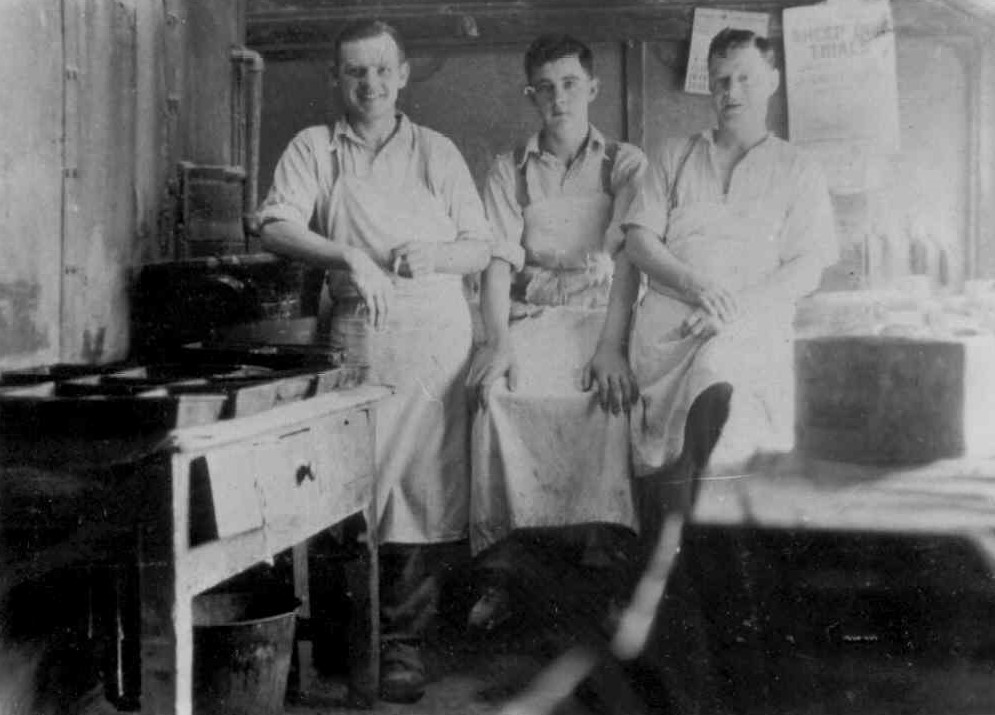

Y Becws
Yng nghyfrifiad 1911 roedd Hugh Owens o Gaernarfon yn cadw’r becws. Erbyn 1926, Cemlyn Roberts oedd y perchennog. Yn y 1940au symudodd Mary Griffith (Mary Fron) ei chwt sinc a’i gynnwys i gadw’r becws yn Gwalia. Bu’r becws yno hyd ddechrau’r 1970au. Arferai Adam Hughes a’r chwarelwyr eraill fynd i lawr i’r becws ar brynhawn Sadwrn o’r gwaith a chael cacennau crwn, jam ac afalau.
Roedd Huw Owens, perchennog y becws yn ddyn doniol a hwyliog. Yn nes ymlaen, daeth Cemlyn Roberts, tad Morfudd Owen (Siop Pen-y-groes, gwraig Evan Wyn) i gadw’r Becws. Yn y cyfnod hwnnw, arferai Adam Hughes a’r chwarelwyr eraill fynd i lawr i’r Becws ar brynhawn Sadwrn, ar y ffordd adref o’r gwaith i gael cacennau crwn, jam ac afalau.
Yn yr 1940au, symudodd Mary Griffith, Fron i gadw’r Becws yn Gwalia. Aeth a chynnwys ei chwt sinc i Gwalia hefyd. Roedd mab Mary Fron a’i gŵr William Griffith (teulu siop Cambrian), sef Alan Jones, yn enwog am drin cwn defaid. Bu’r becws yno tan y saithdegau cynnar.
Dyma benillion digri gan bobl y pentref:
 Llun o 30au/40au. O flaen y becws mae’r drol fara a’r tryc cario dŵr. Siop Owen bwtsiar yn is i lawr.
Llun o 30au/40au. O flaen y becws mae’r drol fara a’r tryc cario dŵr. Siop Owen bwtsiar yn is i lawr.
Huw Owen becar sy’n hen gono
Yn y becws yn tylino
Yng Nghaermynydd mae dwy gath fanw
Un i Lizzie Jane a’r llall i Sianw.
Wil bach Faenol sy’n un doniol
Gwisgo trowsus gwyn a sgidiau m’lynion.
Ffeithiau'r Cyfrifiad:
O flaen y Becws, 1926 – Cemlyn Roberts, Mrs Roberts and Mrs Roberts, Faenol, y ferch, wrth y drol fara. John Jones, Ieuan Jones, ac Edwin Williams yn y Becws yn yr 1940au